S16 — How does the internet actually work?
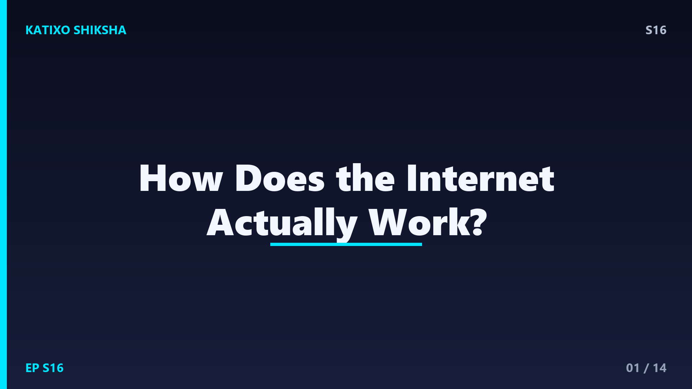
Slide 1दोस्तों, अभी तुम ये video देख रहे हो, लेकिन क्या तुमने कभी सोचा कि ये आया कहाँ से? तुम्हारा phone किसी magic से नहीं, बल्कि समंदर के नीचे बिछी असली cables से जुड़ा है! दुनिया भर में करीब 500 से ज़्यादा submarine cables समुंदर की तली पर पड़ी हैं, जो internet का 99 percent traffic ले जाती हैं। आज Katixo Shiksha पर हम समझेंगे कि internet असल में काम कैसे करता है, बिना किसी जादू के, सिर्फ science और बहुत सारी wires से। चलो शुरू करते हैं!
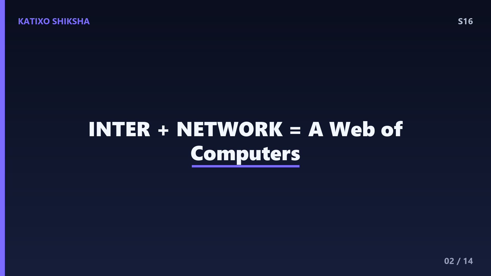
Slide 2सबसे पहले एक बात साफ कर लें, दोस्तों, internet कोई cloud में तैरती हुई चीज़ नहीं है। Internet असल में लाखों computers का एक विशाल network है जो आपस में जुड़े हुए हैं। शब्द internet बना है inter यानी आपस में, और network से। सोचो जैसे पूरी दुनिया की सड़कें एक दूसरे से जुड़ी हों, वैसे ही हर computer किसी न किसी रास्ते से दूसरे computer तक पहुँच सकता है। जब तुम कुछ search करते हो, तो तुम्हारा device इसी विशाल जाल में से एक खास computer से बात कर रहा होता है।
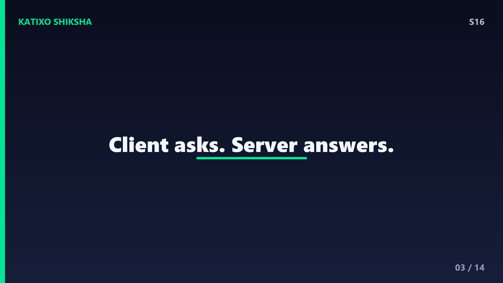
Slide 3अब समझो server क्या है। दोस्तों, जो website तुम देखते हो, जैसे YouTube या Wikipedia, वो किसी एक powerful computer पर रखी होती है जिसे server कहते हैं। ये servers बड़े बड़े data centers में होते हैं, जहाँ हज़ारों machines दिन रात चलती रहती हैं और इतनी गर्मी पैदा करती हैं कि उन्हें ठंडा रखना पड़ता है। तुम्हारा phone या laptop client कहलाता है। Client request भेजता है, server जवाब देता है। यही client-server model पूरे internet की रीढ़ की हड्डी है, दोस्तों।
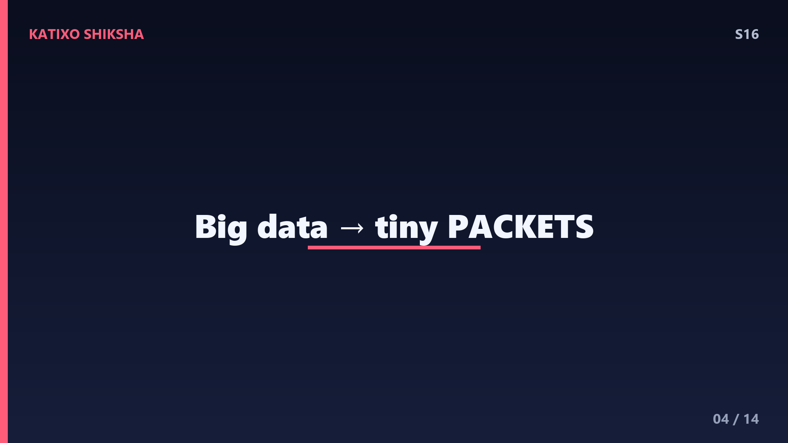
Slide 4अब सबसे मज़ेदार बात, दोस्तों। जब तुम कोई photo या message भेजते हो, तो वो पूरी की पूरी एक साथ नहीं जाती। उसे छोटे छोटे टुकड़ों में तोड़ा जाता है जिन्हें packets कहते हैं। हर packet पर एक address लिखा होता है, ठीक जैसे postal envelope पर। ये packets अलग अलग रास्तों से सफर करते हैं और मंज़िल पर पहुँचकर फिर से सही क्रम में जुड़ जाते हैं। इसे packet switching कहते हैं। इसी वजह से अगर एक रास्ता block हो, तो data दूसरे रास्ते से पहुँच जाता है।
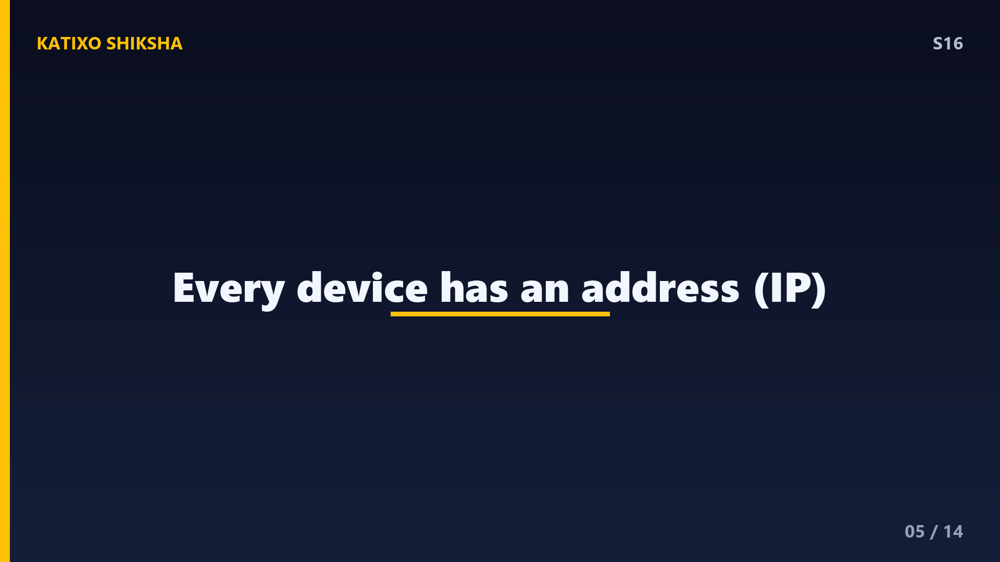
Slide 5पर packet को पता कैसे चलता है कि जाना कहाँ है? यहाँ आता है IP address, दोस्तों। हर device का एक unique नंबर होता है, जैसे घर का पता। पुराना version IPv4 ऐसा दिखता है, चार numbers dots के साथ, और नया IPv6 और भी बड़ा है क्योंकि अब दुनिया में अरबों devices जुड़ चुके हैं। जब तुम कोई website खोलते हो, तुम्हारा packet उस website के server के IP address की तरफ चल पड़ता है। बिना सही address के packet कहीं नहीं पहुँचेगा, बिल्कुल खोई हुई चिट्ठी की तरह।
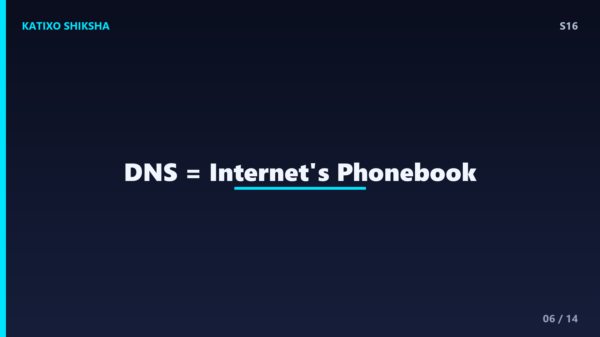
Slide 6अब एक problem है, दोस्तों। तुम्हें याद रहेगा google point com, पर क्या तुम याद रख पाओगे उसका IP नंबर? बिल्कुल नहीं! इसीलिए बना है DNS, यानी Domain Name System। ये internet की phonebook है। जब तुम google point com type करते हो, तो DNS server उसे उसके असली IP address में बदल देता है। ये सब इतनी तेज़ी से होता है कि तुम्हें पता भी नहीं चलता, बस कुछ milliseconds में। DNS के बिना तुम्हें हर website का numbers वाला पता रटना पड़ता, सोचो कितना मुश्किल होता!
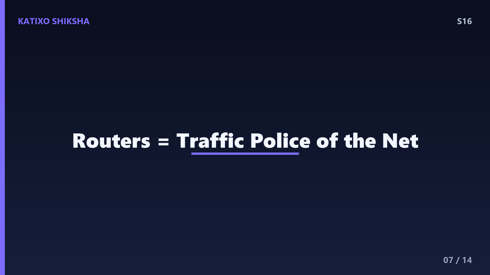
Slide 7अब routers की बारी, दोस्तों। Routers internet के traffic police हैं। हर packet जब server से तुम्हारे device तक आता है, तो वो दर्जनों routers से होकर गुज़रता है। हर router देखता है कि packet का address क्या है और उसे सबसे अच्छे अगले रास्ते की ओर भेज देता है। ये decision millionths of a second में होता है। तुम्हारे घर में जो WiFi router है, वो भी यही काम करता है, बस छोटे स्तर पर, तुम्हारे devices को बाहर की दुनिया से जोड़ता है।
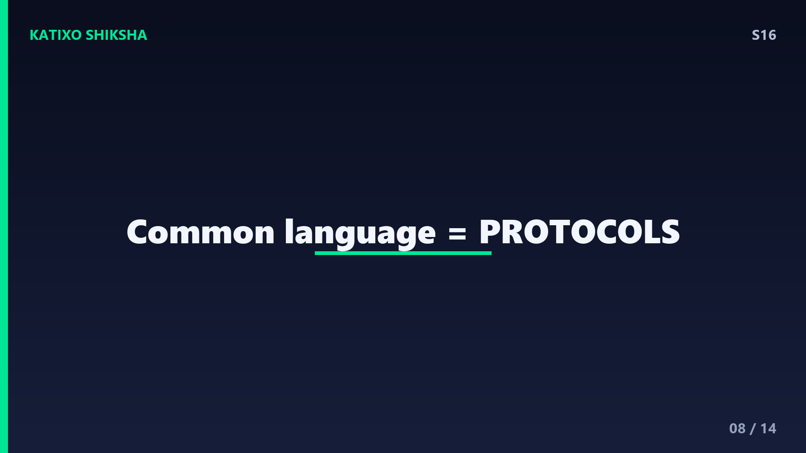
Slide 8ये सारे packets एक भाषा में बात करते हैं जिसे protocol कहते हैं, दोस्तों। सबसे ज़रूरी है TCP slash IP। TCP यानी Transmission Control Protocol ये ध्यान रखता है कि सारे packets पहुँचें और सही क्रम में जुड़ें, और अगर कोई packet खो जाए तो दोबारा भेजे जाएँ। IP packets को address करके सही जगह भेजता है। जब तुम कोई website देखते हो, तो उसके ऊपर HTTP या HTTPS protocol चलता है। HTTPS में जो S है वो secure का है, यानी तुम्हारा data encrypt होकर जाता है।
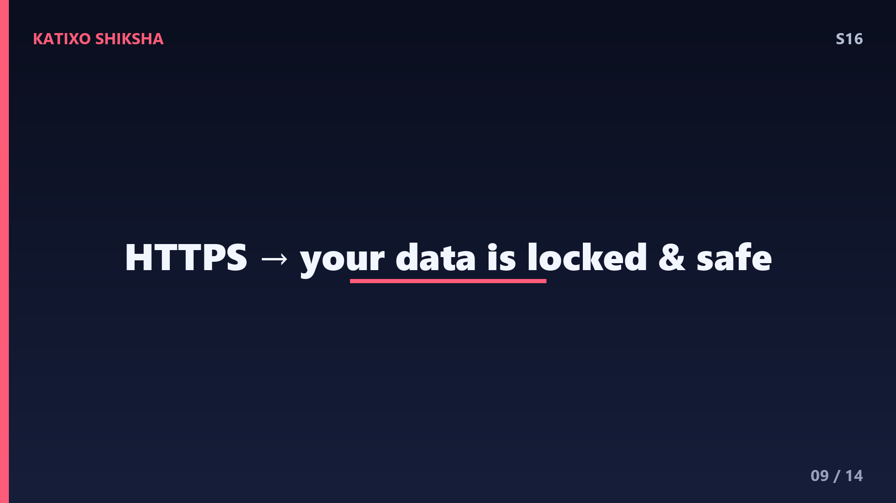
Slide 9Encryption के बारे में थोड़ा और जान लो, दोस्तों, क्योंकि ये बहुत important है। जब तुम net banking करते हो या password डालते हो, तो वो data scramble हो जाता है, यानी ऐसे code में बदल जाता है जिसे बीच में कोई पढ़ नहीं सकता। सिर्फ सही server के पास वो key होती है जो उसे वापस पढ़ने लायक बना सके। इसीलिए browser में जब लोग वाला lock दिखता है, समझ जाओ connection safe है। ये math का कमाल है, इतना मज़बूत कि बड़े से बड़ा computer भी उसे आसानी से नहीं तोड़ सकता।
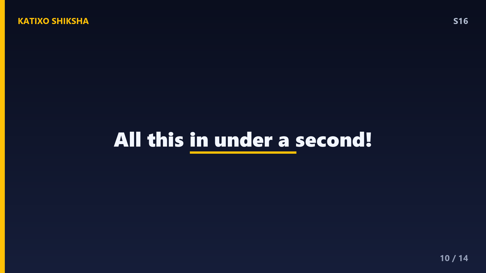
Slide 10अब पूरा सफर एक साथ देखो, दोस्तों। तुमने phone पर video चलाया। तुम्हारा request packets में टूटा, DNS ने address ढूँढा, routers ने रास्ता दिखाया, समंदर के नीचे cables से होकर वो किसी data center तक पहुँचा। Server ने video के packets वापस भेजे, वो फिर routers से होकर तुम्हारे WiFi तक आए, और तुम्हारे device ने उन्हें जोड़कर screen पर दिखा दिया। और ये सब हुआ एक second से भी कम में, light की रफ्तार के करीब! है ना कमाल की बात?
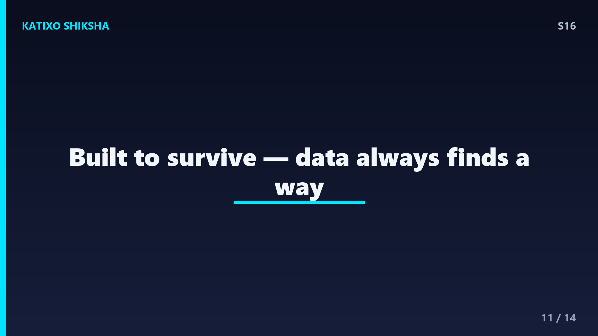
Slide 11एक मज़ेदार fact, दोस्तों। Internet को इस तरह design किया गया था कि उसका कोई एक central control न हो। ये 1960s में अमेरिका के ARPANET project से शुरू हुआ। Idea ये था कि अगर network का एक हिस्सा टूट जाए, तो भी बाकी काम करता रहे, क्योंकि data हमेशा कोई दूसरा रास्ता ढूँढ लेगा। यही वजह है कि internet इतना मज़बूत है। आज दुनिया में 5 अरब से ज़्यादा लोग internet इस्तेमाल करते हैं, और हर second लाखों GB data इधर से उधर दौड़ रहा होता है।
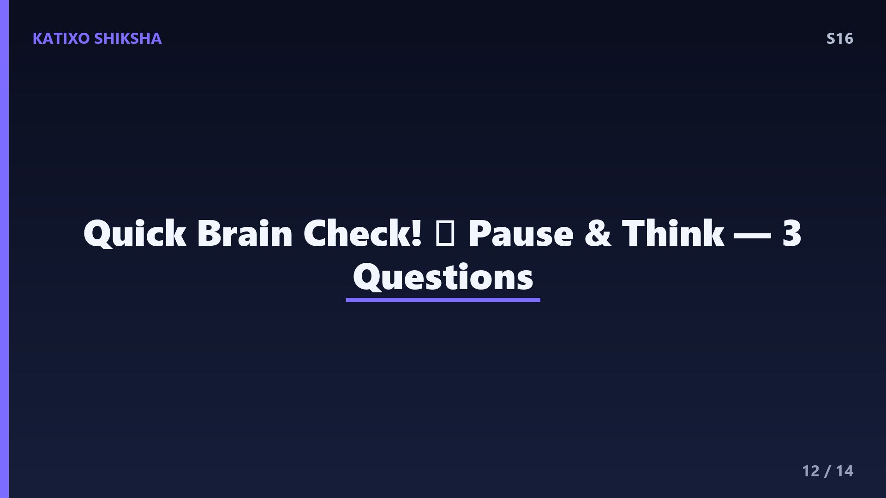
Slide 12Quick brain check, दोस्तों! तीन सवाल, और जवाब देने से पहले video को pause करके सोचो। पहला, data को छोटे छोटे टुकड़ों में तोड़ने वाली process को क्या कहते हैं? दूसरा, कौन सी system website के नाम को IP address में बदलती है, इसे internet की phonebook भी कहते हैं? और तीसरा, HTTPS में S किस चीज़ के लिए होता है? सोचो, याद करो, और अपना जवाब मन में पक्का कर लो। तैयार? चलो अब अगली slide पर जवाब मिलाते हैं!
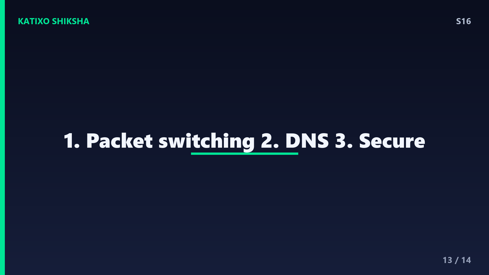
Slide 13तो दोस्तों, जवाब देखते हैं! पहला, data को टुकड़ों में तोड़ने को कहते हैं packet switching, और हर टुकड़ा है packet। दूसरा, website के नाम को IP address में बदलने वाली system है DNS यानी Domain Name System, internet की phonebook। और तीसरा, HTTPS में S का मतलब है secure, यानी तुम्हारा data encrypt होकर safe तरीके से जाता है। कितने सही हुए? अगर तीनों सही हुए तो शाबाश, तुम तो internet expert बनते जा रहे हो!
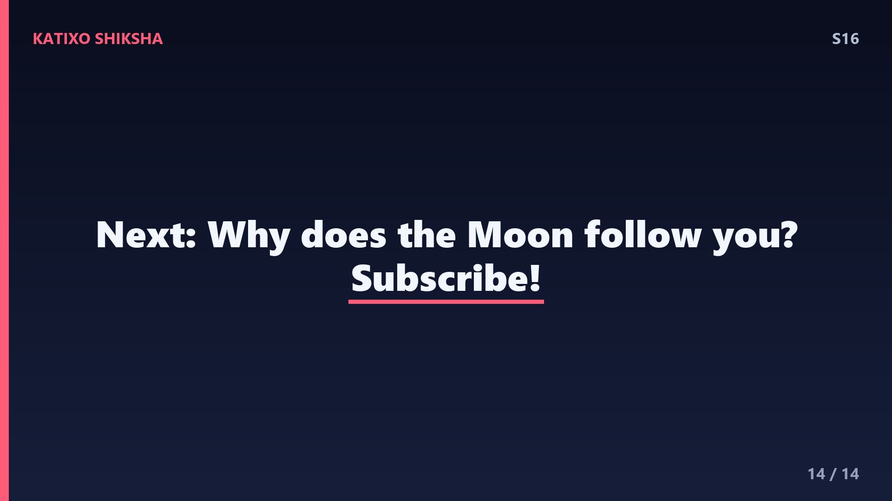
Slide 14तो आज हमने सीखा, दोस्तों, कि internet कोई जादू नहीं, बल्कि computers, cables, packets, IP address, DNS, routers और protocols का एक शानदार system है। अगली बार जब तुम कुछ भी online देखो, तो याद रखना कि पीछे कितना सारा science चल रहा है। अगले episode में हम जानेंगे एक और रोचक सवाल, चाँद हमारे साथ साथ क्यों चलता हुआ लगता है? तब तक के लिए जिज्ञासु बने रहो। पसंद आया तो like करो और Subscribe करना मत भूलना! Bye दोस्तों!